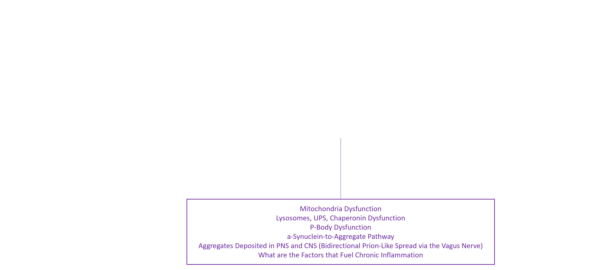
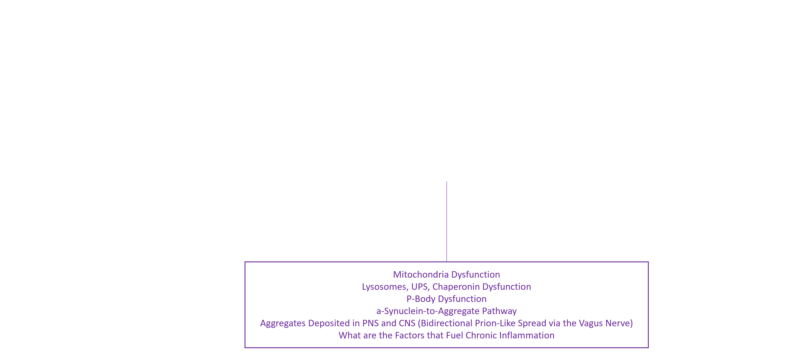

Index
- Background
- Current state of Parkinsonism, clinical progression, and pathology overview
- Gateways
- Gut-first, brain-first (both intrinsic and extrinsic), and DRG-first
- Pathogenesis/Sustainers
- Chronic inflammation, ER stress, mitochondrial dysfunction, ERVs, proteostasis collapse
- Morphological Outcomes
- a-syn aggregates (GCIs vs. LBs), neurotransmitter deficit, loss of glial cell support
- Wrap-up
Background
-
Parkinsonism refers to a group of neurodegenerative diseases that share overlapping motor symptoms and some pathological features. These include Parkinson’s Disease (PD), Multiple System Atrophy (MSA), and Lewy Body Dementia (LBD).
-
LBD affects ~1.4 million people in the U.S.
PD affects ~1 million people.
MSA is rare—fewer than 50,000 cases (designated an Orphan Disease). -
Generally they have a long prodromal period, but after Central Nervous System involvement, the progression rates are significantly different.
-
Today's main therapy—Levodopa—was FDA approved in 1975 - YIKES!. It’s still the standard for PD, often used in MSA, and sometimes used in LBD.
General Model of Parkinsonism Progression: Prodromal and Post-Prodromal Phases
Adapted from: Kalia LV, Lang AE. Parkinson’s disease. Lancet. 2015;386(9996):896–912. https://doi.org/10.1016/S0140-6736(14)61393-3
Parkinsonism Pathway

 


Gateways
-
Gut-First, Dysbiosis, Leaky-Gut, Pathobiont.
-
Brain-First, Pathogens, Neurotoxins, Nasal Cavity.
-
Dorsal Root Ganglion-First, Diabetes (T2D).
-
The prodromal and post-prodromal progression rate is influenced by the gateway.
Gut-First
-
Increasing evidence suggests that PD (and potentially MSA) patients show a distinct microbiota imbalance (dysbiosis).
-
This imbalance compromises mucin barrier AND activates the innate immune system in the enteric nervous system leading to inflammation.
-
Inflammation drives disease onset as well as disease progression.
-
Notably, the phyla Proteobacteria, Firmicutes, and Verrucomicrobia show significant vulnerabilities to this assault. Dysbiosis involving the more abundant Proteobacteria and Firmicutes is captured by 16S rRNA sequencing, whereas changes within Verrucomicrobia are best resolved using shotgun metagenomics.
Dysbiosis averaged from three 16S studies
Leaky Gut from Dysbiosis
Ref: Nishiwaki, H., Ueyama, J., Ito, M. et al. Meta-analysis of shotgun sequencing of gut microbiota in Parkinson’s disease”. npj Parkinson’s Disease, 10, 106 (2024). https://doi.org/10.1038/s41531-024-00724-z
Chronic Inflammation Drivers

- Mitochondrial Dysfunction
- Proteostasis Dysfunction
- Endogenous Retrovirus (ERV) Derepression
- Endoplasmic Reticulum Stress/Unfolded Protein Response (UPR)
- P-Body Dysfunction
- Misfolded ɑ-synuclein Accumulation
Proposed Effect of Endogenous Retrovirus (ERV) Derepression

Here’s the next step in the ERV derepression model…